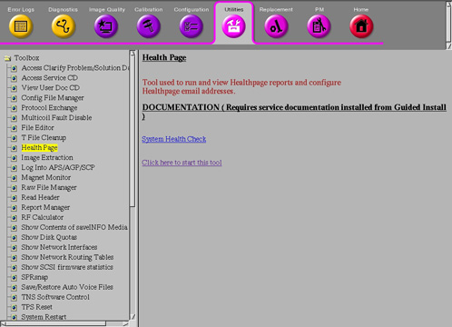

Operating Documentation
Direction 5500113, Rev# 3
Discovery MR450 1.5T Service Methods
Module Version 1.0, Version Date 3/28/08
Operating Documentation |
The System Health tool, sys_health, checks the existence, validity, and consistency of selected fields in system configuration and calibration files. Status, along with field values, displays and is sent to an output file named system_health.log in the /usr/g/service/log directory. The tool identifies possible configuration file corruptions, incorrect parameter settings, bad or missing calibration procedures, and calibration failures. The sys_health tool helps shorten the length of troubleshooting sessions and provides the operator with a quick summary of the system health, which identifies and isolates possible problems and eliminates redundancy in the calibration process.
Section 1, Running the Tool from a Command Line.
Section 2, Running the Tool from the Common Service Desktop browser.
Ensure that the service key is inserted, and perform a TPS reset.
Select the C-shell from the Service Desktop Manager. Type the following in the C-Shell window: cd /usr/g/service/cclass and press <Enter>.
Type: sys_health -nf -ns -notns -asc and press <Enter>.
This tool generates and displays status output and sends it to an output file named system_health.log in the /usr/g/service/log directory, until a fatal error occurs (if the option keys <-nf> are not used) or when it is complete.
See Section 6 for advanced commands.
| NOTE: | It may take several minutes before any results display. |
| NOTE: | If a system_health.log file already exists, it will be copied to *.log.bkup when sys_health is initiated. Consequently, two versions of the log may be kept; the current one and a *.bkup one. |
Illustration 1: Starting the System Health Tool

From the Service Desktop Manager, select Common Service Desktop. The Common Service Desktop opens. See Illustration 1.
From the Utilities tab, select Health Page from the left navigation list.
Click the Click here to start this tool link.
The System Health Tool opens.
To run a regular pass of system health, click on [Configure] and if it is available, select [Enable Health Page]. To run any variation of the other system health, make a selection based on the options in the [Configure] and [Report] windows (see step 6, Illustration 2 and Table 1).
Click on [Report] and select [Full Report] (or for any other variation of System Health, (see step 6, Illustration 2 and Table 1).
Menu items at the top of the window represent the controls available for this tool.
[Exit] closes the System Health Window.
[Report] opens a menu with three options:
[Custom Report] generates a report that is a subset of a full report. This subset is set up in the [Configure] pull-down menu.
[Full Report] gives a report of all items System Health is designed to look at.
[Last Report] displays the last System Health report generated. You can also view the last report run from the Service Browser. See Section 4.
Illustration 2: System Health Tool

| NOTE: | Reports take several minutes to run. |
Click[Configure] to open the System Health Tool Custom Menu:
Table 1: System Health Tool Custom Menu
| Enable/Disable Health Page | This is a toggle selection. The current state of the Health page displays. Click the entry to change it. |
| Edit Schedule | System Health can be scheduled to run on a periodic basis: Enter specific dates or select the routine run to occur on a regular basis. See Illustration 3. |
| Edit E-Mail Addresses | Enter e-mail addresses to have reports automatically sent. See Illustration 4. |
| Edit Report Content | Use this tool to modify the checks that System Health makes. See Illustration 5. Click [Select All] (which is the default) to select everything. Or click [Clear] to change the Include list to [No] items, and then double-click the entries for which you want to change the Include field to [Yes]. Click [Accept] when done. |
Illustration 3: Auto Report Setup

Illustration 4: Edit E-Mail Addresses

Illustration 5: System Health Report Content

Double-click on the item to toggle the Include field between “Yes” and “No”.
To display the output (system_health.log) file in a C-Shell, type:
cd /usr/g/service/log and press <Enter>.
more system_health.log and press <Enter>.
To view additional information, press the <Spacebar> until you reach the end of the file. Refer to sample System Health Output.
To view the last System Health Report that was run on the system, go to the Error Log tab of the Common Service Desktop. See Illustration 6.
Illustration 6: Accessing the Health Page Log

Illustration 7: System Health Page

The sys_health software determines the software revision on the current system by invoking the <getver> command.
The sys_health tool reports the number of free disk blocks on the current system.
The sys_health tool checks for installed options.
The sys_health tool lists the hardware components on the host computer and reports all SCSI devices on the host that are powered up.
The sys_health tool checks file checksums. This feature determines whether or not any software or patches have been loaded on the system.
The sys_health tools reads the Transient Noise Suppresion (TNS) status, which reports the spike noise count data.
From a C-shell, execute the following command to see available advanced options:
/usr/g/service/cclass/sys_health -h, then press <Enter>.
Table 2: Optional Keys
| Key | Definition |
| <-p> | Displays plots of selected data sets. You will be prompted for confirmation before plotting the selected data set |
| <-nf> | Do not terminate a program when a FATAL error is encountered |
| <-h> | Displays the command options |
| <more> | Press the spacebar to display another screen of data |
| NOTE: | Only one option at a time can be selected (i.e., enter <-p>,< -nf>, or <-h>; do not include the “<>” characters or the command will not work). In most cases, the <-nf> option is used. |